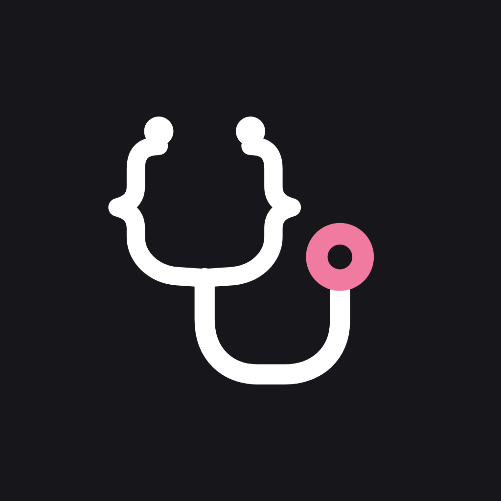
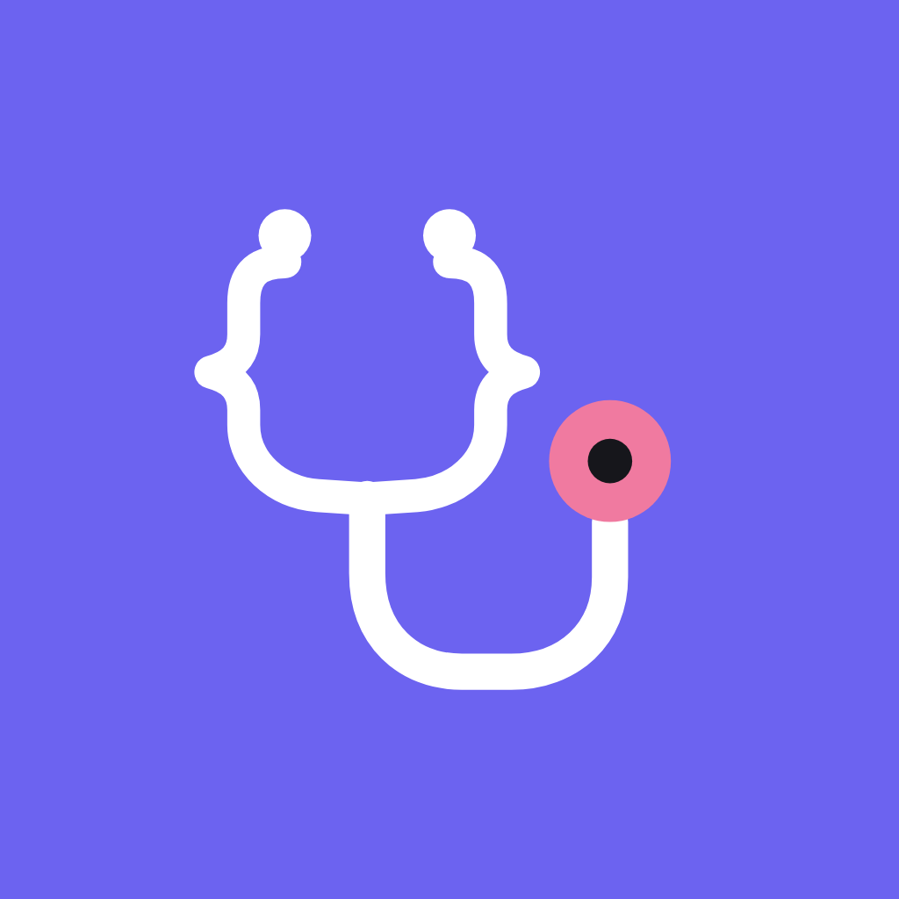
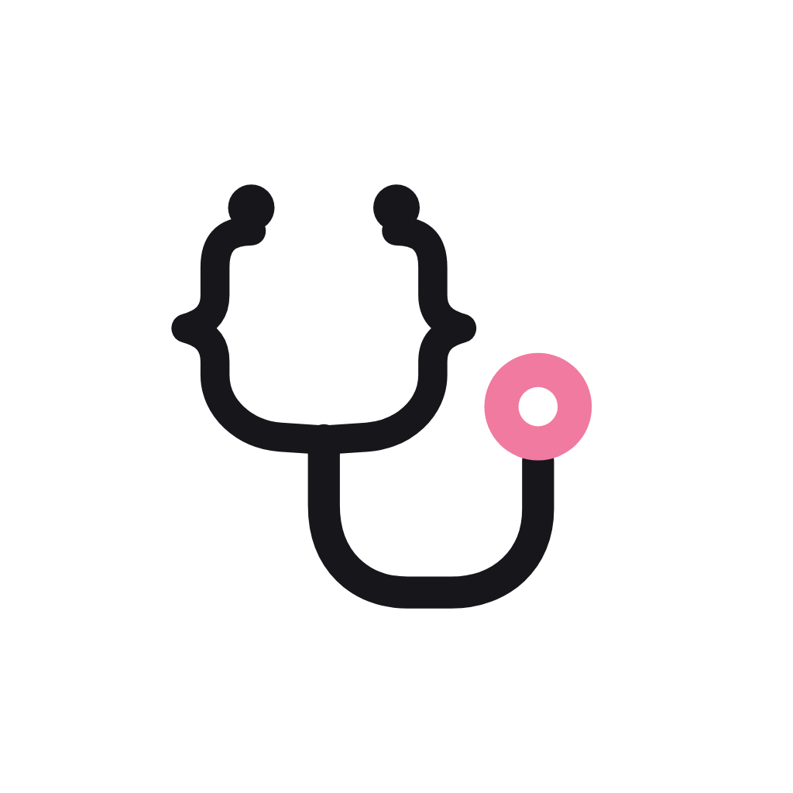

Stetoskobun kulak boruları süslü parantez { } şeklinde; aşağıda tek hortumda birleşip U çiziyor ve sağda pembe göğüs parçasında bitiyor. Sağlık ve kod tek bir işarette.
İşaret · açık zemin
İşaret · koyu zemin
İşaret · lavanta zemin
Yatay logo · açık zemin
Yatay logo · koyu zemin
Yatay logo · gri zemin
GitHub görseli daire olarak keser. Üçü de 1024×1024 piksel; birini seç ve Edit profile'dan yükle.

Koyu (önerim)
Lavanta
Açık| Dosya | Ne için |
|---|---|
| stetocode-isaret.svg / -beyaz.svg | Web sitesi, favicon, uygulama içi; her boyutta keskin |
| stetocode-logo.svg / -beyaz.svg | Site üst menüsü, sunumlar. Yazı Instrument Sans; font yüklü değilse benzer bir yazı tipine düşer, bu yüzden dışarıya PNG gönder |
| stetocode-isaret-1024.png / -beyaz-1024.png | Şeffaf zeminli işaret; sosyal medya, belgeler |
| stetocode-logo-2000.png / -beyaz-2000.png | Şeffaf zeminli yatay logo; sunum, PDF, e-posta imzası |
| github-avatar-koyu/lavanta/acik.png | GitHub ve diğer profil görselleri |